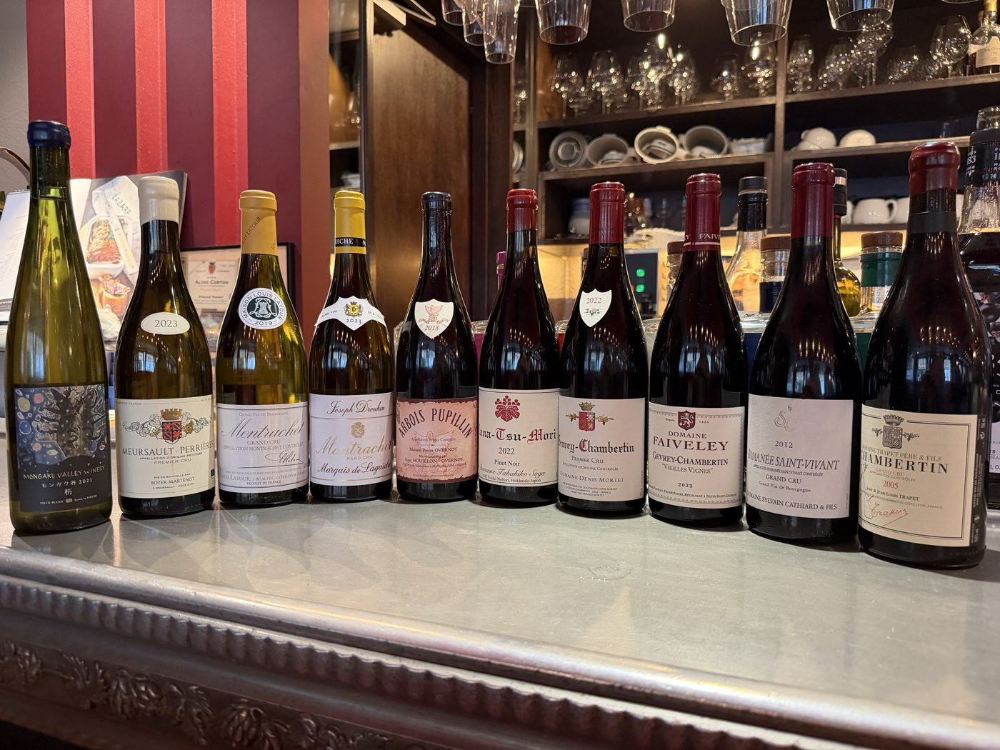
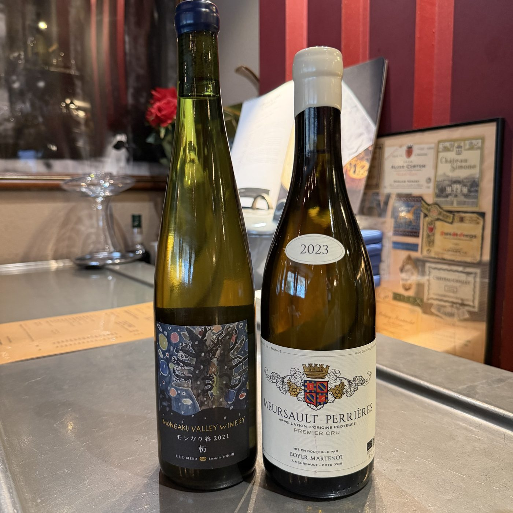
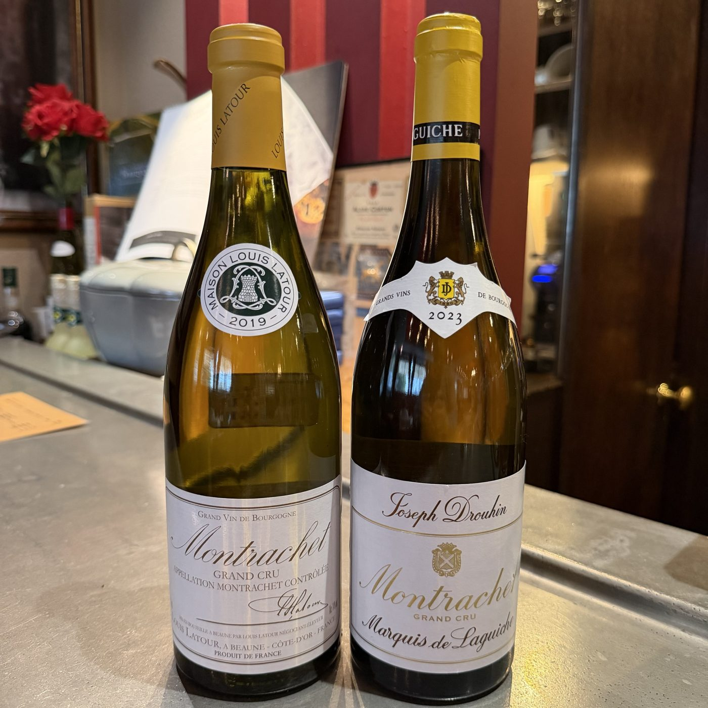
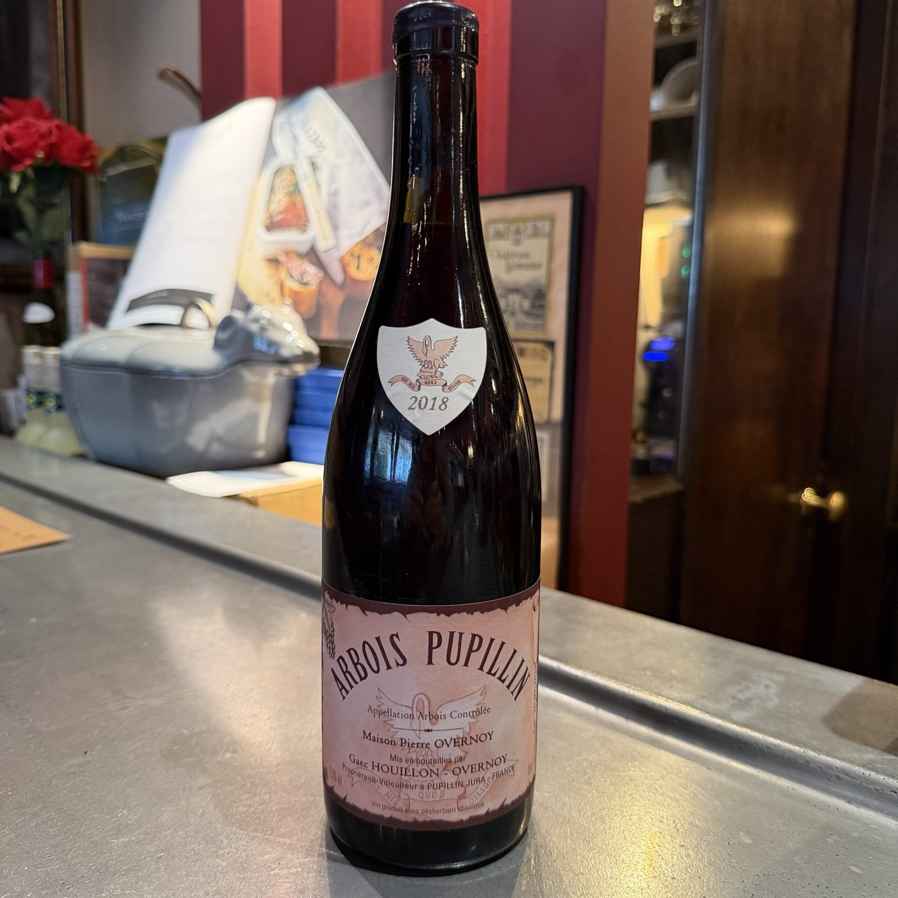
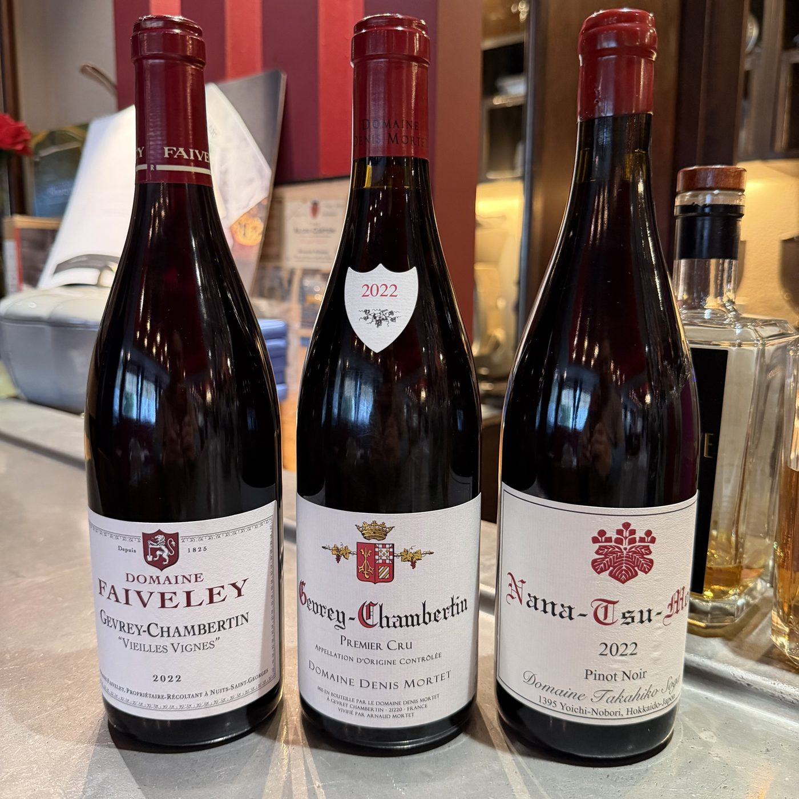
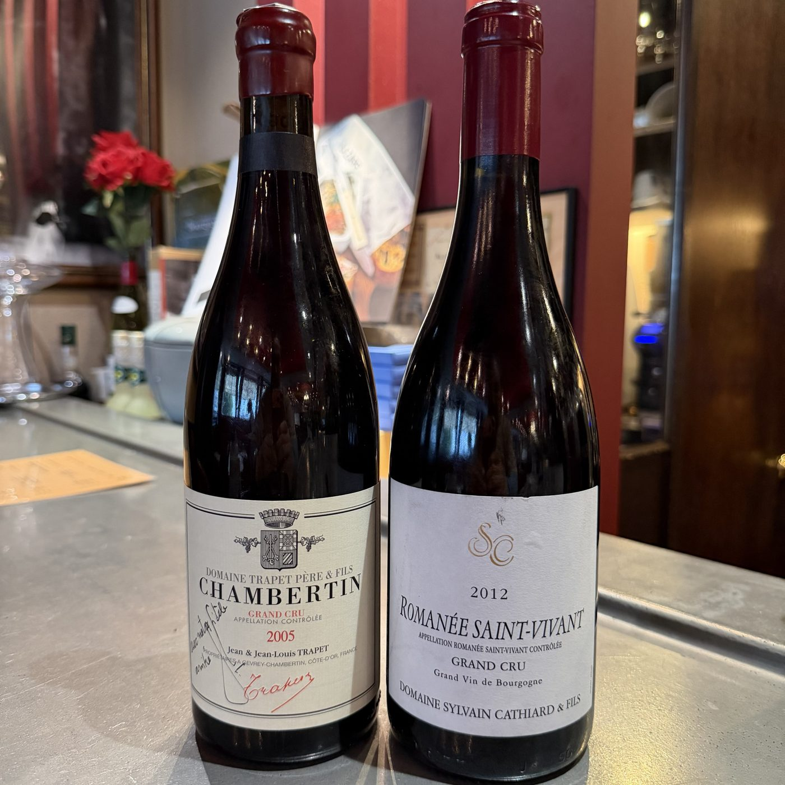

ワイン会 ワインリスト
泡 + 10本 ― 並べて飲むと、違いが見える

今日のテーマ
乾杯の泡のあと、10本を2〜3本ずつ「並べて」飲みます。1本ずつ飲むと「おいしい」で終わりますが、並べると違いがはっきり分かります。違いを当てる必要はありません。「こっちの方が好き」と感じるだけで十分です。
比べる軸は3つです。
- 日本とフランス ― 同じブドウ品種でも、土地と造り手が変わると味がどう変わるか
- 造り手 ― 同じ畑でも、誰が造るかでどう変わるか
- 熟成 ― 若いワインと、10年以上寝かせたワインはどう違うか
| 順 | テーマ | ワイン |
|---|---|---|
| 乾杯 | 泡 | |
| 白① | 日本 vs フランス | 杤 2021北海道・余市Meursault 1er Perrières 2023Boyer-Martenot |
| 白② | 同じ畑、造り手と熟成 | Montrachet 2023Joseph DrouhinMontrachet 2019Louis Latour |
| 赤① | 単独で味わう | Arbois Pupillin 2018Overnoy / Houillon |
| 赤② | 2022年ピノ、日本 vs ジュヴレ | Nana-Tsu-Mori 2022Domaine TakahikoGevrey VV 2022FaiveleyGevrey 1er 2022Denis Mortet |
| 赤③ | 特級畑、村と熟成 | Romanée-Saint-Vivant 2012Sylvain CathiardChambertin 2005Trapet |
北海道とムルソー、冷涼な白の日仏比較
最初は、北海道の白とブルゴーニュの白を並べます。どちらも寒い土地で育ったブドウから造られた辛口です。

杤 2021
- 一つの畑で育つ複数の品種を一緒に醸造する「フィールドブレンド」の白です。
- 中身はピノ・ノワール75%、ピノ・グリ14%、ソーヴィニヨン・ブラン8%など。黒ブドウのピノ・ノワールが主体ですが、皮の色を移さずに白ワインに仕上げています。
- 造り手は和食の出汁から着想を得たとしています。
Meursault 1er Cru Perrières 2023
- ムルソー村は、ブルゴーニュを代表する白ワインの村です。品種はシャルドネ。
- ペリエールはその中でも最上位クラスと評価される畑で、引き締まった酸とミネラル感が持ち味です。
比べるポイント ― 香りの華やかさ、口に含んだときの重さ、後味に残るものの違い。日本の白の繊細さと、ムルソーの厚みを感じてみてください。
同じモンラッシェを、2つの造り手で
モンラッシェは、世界最高の白ワインの畑の一つとされる特級畑(グラン・クリュ)です。同じ畑のワインを2本並べられる機会はめったにありません。

Montrachet Grand Cru Marquis de Laguiche 2023
- モンラッシェの畑を代々所有するラギッシュ侯爵家のブドウを、ボーヌの名門ドルーアンが醸造しています。
- 2023年はまだ若く、果実と酸がはつらつとした段階です。
Montrachet Grand Cru 2019
- 1797年創業、ブルゴーニュ屈指の老舗ルイ・ラトゥールの一本です。
- ドルーアンより4年長く熟成しており、香りに丸みや奥行きが出始めています。
比べるポイント ― 同じ畑でも、造り手と年数が違えばどう変わるか。グラスの中で時間とともに香りが開いていく様子も楽しんでください。
白から赤へ、気分を切り替える一本
赤の最初は、比較せずに1本だけで味わいます。

Arbois Pupillin 2018
- ピエール・オヴェルノワは、自然派ワインの先駆者として世界中の造り手に影響を与えた人物です。現在は後継者のエマニュエル・ウイヨンが造っています。
- 生産量が非常に少なく、手に入りにくいワインの代表格です。
- ブルゴーニュのすぐ東、ジュラ地方の赤です。色は淡く、軽やかで、ブルゴーニュの赤とはまったく違う個性があります。
楽しみ方 ― 比べる必要はありません。ここで一度、白の余韻をリセットしてください。この「軽やかさ」を覚えておくと、次の赤②の重さの違いがよく分かります。
同じ2022年のピノ・ノワール、日本とジュヴレ・シャンベルタン
3本とも品種はピノ・ノワール、収穫年も同じ2022年です。条件を揃えたので、違いは「土地」と「造り手」から生まれます。

Nana-Tsu-Mori Pinot Noir 2022
- 曽我貴彦さんが造る、日本で最も入手困難なピノ・ノワールの一つです。
- アルコール12%と軽めで、出汁のような旨みと香りを目指したワインです。
Gevrey-Chambertin Vieilles Vignes 2022
- ジュヴレ・シャンベルタン村は、力強い赤で知られるブルゴーニュの村です。
- これは村名クラス(特定の畑を名乗らない、村全体の格付け)。「ヴィエイユ・ヴィーニュ」は樹齢の高い古木のブドウを意味します。
Gevrey-Chambertin 1er Cru 2022
- 同じ村の、一つ上の格付け「1級畑(プルミエ・クリュ)」です。
- ドゥニ・モルテは、凝縮感のある濃いジュヴレで評価の高い造り手です。
比べるポイント ― 左から順に、色の濃さ、香りの強さ、口の中での重さが増していくはずです。日本のピノの軽やかさと、ジュヴレの力強さ、村名と1級の格の差を感じてみてください。
締めは特級畑2本、ヴォーヌとジュヴレの熟成対決
最後は、ブルゴーニュの格付けの頂点「特級畑(グラン・クリュ)」の赤を2本。どちらも10年以上熟成しています。

Romanée-Saint-Vivant Grand Cru 2012
- ヴォーヌ・ロマネ村の特級畑です。あのロマネ・コンティのすぐ近くにあります。
- シルヴァン・カティアールは、繊細で優美なワインで評価される少量生産の造り手です。
Chambertin Grand Cru 2005
- ジュヴレ・シャンベルタン村の筆頭の特級畑。ナポレオンが愛したワインとして知られます。
- 2005年はブルゴーニュの当たり年とされる年です。20年近く熟成し、飲み頃を迎えつつあります。
比べるポイント ― ヴォーヌの「華やかさと絹のような質感」と、ジュヴレの「骨格と力強さ」。そして、赤②の若い2022年と比べて、熟成で香りや口当たりがどう変わったかに注目してください。
楽しみ方のヒント
- 行ったり来たりしてOK ― 同じ組のグラスは並べておき、何度でも飲み比べてください。
- 時間で変わる ― 特に白②と赤③は、グラスに注いでから15〜30分で香りが開いていきます。最初の一口で決めつけないのがコツです。
- 好みを言葉にしてみる ― 「軽い/重い」「酸っぱい/まろやか」「果物っぽい/土っぽい」くらいの言葉で十分です。
- 水を飲みながら ― 10本は量が多いので、合間に水を挟むと最後まで味が分かります。